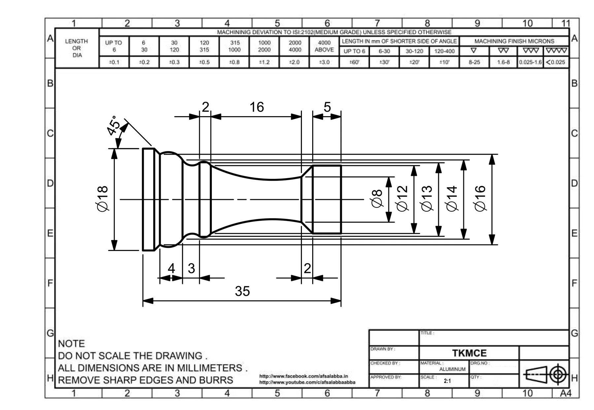

CNC Lathe Rook
1st Year
A CNC turning job on the LMW Smart Jr lathe (Siemens SINUMERIK 802D sl control). Turn the 3D model, then study the drawing, tools, codes and program below.
3D Model
Loading 3D model…
Drag to rotate · Scroll or pinch to zoom · Right-drag or two fingers to pan
Engineering Drawing

Tools & Machining Sequence
Each operation uses its own tool. For every step the list gives the tool and insert, the spindle speed and the feed, in the order the Lathe Rook is machined.
01. Stopper / Workpiece positioning
Tool: T4 D1 — Sleeve (Stopper)
Workpiece positioning / stopper setting02. Facing
Tool: T1 D1 — PCLNR 2020 K12
Constant surface speed: G96 S200 LIMS=1500 M03
Two passes: first at Z0.25, then the finishing pass at Z0
Feed: F0.103. Contouring / Profile Turning
Tool: T7 D1 — MVJNR 2020 K16
Constant surface speed: G96 S200 LIMS=1500 M03
CYCLE95 stock removal cycle
The contour is defined using AB:BC04. Parting / Cut-off
Tool: T3 D1 — CFIR 2020 K06
Constant RPM: G97 S1200 M03
Feed: F0.05
Parting at Z-38 with the R1 variable and an IF/GOTO loop
Coolant
The coolant is soluble oil mixed with water. M08 switches it on and M09 switches it off.
Why it looks like milk
Soluble oil contains an emulsifier. When it is mixed into water, the oil breaks up into very small drops that stay spread through the water. These drops scatter the light, so the mixture turns milky white. This mixture is called an emulsion.
What the coolant does
- Cools: the water carries the heat away from the tool tip and the work, so the insert lasts longer and the size stays correct.
- Lubricates: the oil reduces the friction between the chip and the tool, which gives a better surface finish.
- Flushes: it washes the chips away from the cutting zone.
- Stops rust on the work and the machine.
G & M Codes
The codes and functions for this machine, from the process guide.
Preparatory functions (G codes)
- G00
- Rapid positioning
- G01
- Linear interpolation
- G02
- Circular interpolation, clockwise (CW)
- G03
- Circular interpolation, counter-clockwise (CCW)
- G70
- Dimensions in inch
- G71
- Dimensions in mm
- G75
- Return to home
- G90
- Absolute dimensions
- G91
- Incremental dimensions
- G96
- Constant cutting speed (constant surface speed) – S is the cutting speed, LIMS the maximum rpm
- G97
- Constant spindle speed – S is the rpm
Miscellaneous functions (M codes)
- M00
- Program stop
- M01
- Optional stop
- M02
- Program end without reset
- M03
- Spindle clockwise (CW)
- M04
- Spindle counter-clockwise (CCW)
- M05
- Spindle stop
- M06
- Tool change
- M08
- Coolant ON
- M09
- Coolant OFF
- M30
- Program end with reset
Other words
- N
- Sequence or block number
- T
- Tool selection
- D
- Offset page number
- S
- Spindle speed – rpm with G97; cutting speed in m/min with G96
- F
- Feed in mm/rev
- CR
- Radius of arc
- R
- R parameters (variables), e.g.
R1=20 - CYCLE95
- Stock removal cycle
Functions
- IF
- Condition (true or false)
- GOTO
- Jump marker
- =
- Assignment
- ==
- Equal
- >
- Greater than
- <
- Less than
- >=
- Greater than or equal
- <=
- Less than or equal
CNC Turning Program
Press Play to run the program on the 3D bar: the tool moves, the material comes off and the running block is highlighted. View brings the 3D view back to the start while the program goes on. Tap a contour block (AB … BC) to see it on the profile, or tap the profile to find its block.
;***STOPPER***
N10
G75 X0 Z0
T4 D1 ; SLEEVE (STOPPER)
G00 X0 Z0
M00
G75 X0 Z0
M01
;***FACING***
N20
G75 X0 Z0
T1 D1 ; PCLNR 2020 K12
G96 S200 LIMS=1500 M03
M08
G00 X22 Z2
G01 X22 Z0.25 F0.1
G01 X-2 Z0.25
G00 X22 Z2
G01 X22 Z0 F0.1
G01 X-2 Z0
G00 X22 Z2
G75 X0 Z0
M05
M09
M01
;***CONTOURING***
N30
G75 X0 Z0
T7 D1 ; MVJNR 2020 K16
G96 S200 LIMS=1500 M03
M08
G00 X22 Z2
CYCLE95( "AB:BC", 1.00000, 0.20000, 0.40000, 0.00000, 0.15000, 0.10000, 0.05000, 9, , ,)
G00 X22 Z2
G75 X0 Z0
M05
M09
M01
;***PARTING***
N40
G75 X0 Z0
T3D1 ; CFIR 2020 K06
G97 M03 S1200
M08
G00 X22 Z2
G00 X22 Z-38
R1=20
N100
G01 X=R1 Z-38 F0.05
G01 X=R1+0.5 Z-38
R1=R1-2
IF R1>=-1 GOTO N100
IF R1<-1 GOTO N200
N200
G00 X22 Z-38
G00 X22 Z2
G75 X0 Z0
M09
M05
M30
;***CONTOUR***
AB:
G01 X0 Z0 F0.1
G01 X12 Z0
G01 X12 Z-5
G01 X8 Z-7
G01 X8 Z-9
G02 X12 Z-23 CR=25
G03 X13 Z-25 CR=1.5
G02 X14 Z-28 CR=2
G03 X16 Z-32 CR=3
G01 X18 Z-33
G01 X18 Z-35
G01 X18 Z-38
G01 X20 Z-38
BC:Operating the Machine
CNC (Computer Numerical Control): the machine moves by the program, not by hand wheels. Follow these cards in order – from switching on, through tool offset and entering the program, to simulation and the actual run.
⚠ Do not operate the machine from this page alone – always work under the guidance of an instructor or an experienced person. We are not responsible for any loss, damage or injury that results from using this information.
Safety first
- Wear safety shoes. No loose clothes; tie back long hair.
- Close the door before Cycle Start. Never open it or reach inside while the spindle is turning.
Machine ON
- Main panel ON
- Stabilizer ON
- Press the Start button
- Machine main power ON
Running setup
- Release the emergency stop
- Press Reset
Tool offset
X axis
- Jog
- Bring the tool to position (X axis)
- Measure tool
- Measure manual
- Enter the diameter
- Save position
- Length 1
- Back (twice)
Z axis
- Bring the tool to position (Z axis)
- Measure tool
- Measure manual
- Enter zero
- Length 2
- Back (twice)
New program
- Program manager
- New
- Enter any name
- Input
- Enter the program
Simulation
- Program manager
- Select the program
- Execute
- MEM
- Close the door
- Simulation
- Keep a hand on Reset and press Cycle Start
⚠ Important: if the machine moves, press Reset.
Running the program
- MEM
- Close the door
- Single block
- Keep a hand on Reset and press Cycle Start
⚠ Important: if there is any movement that is not in the program, press Reset.
Machine OFF
- Check that all tools are in a safe position
- Press the emergency stop
- Machine main power OFF
- Stabilizer OFF
- Main panel OFF
Viva Questions
Tick one answer for each question, then press Submit.